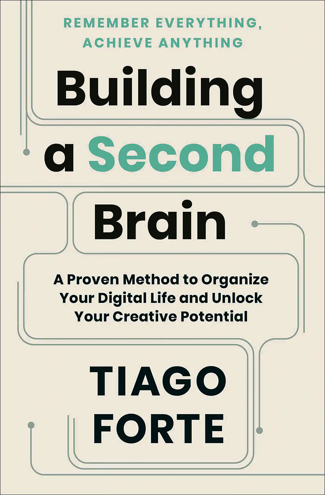
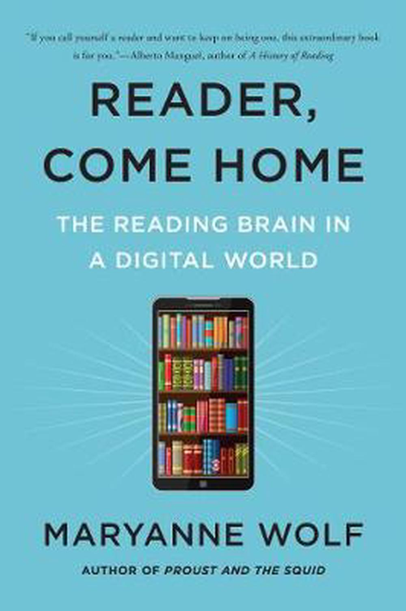
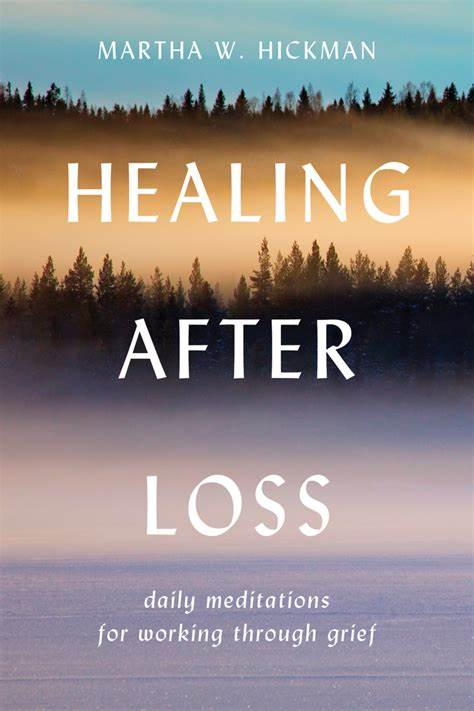
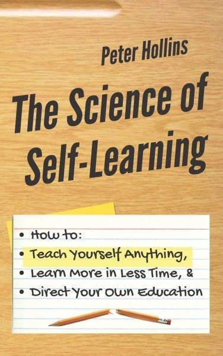
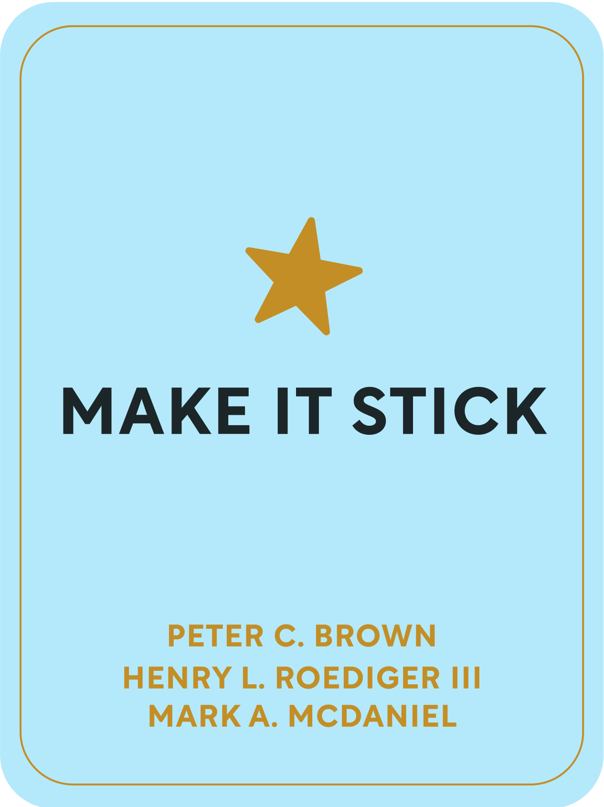

Building a Second Brain
Author:Tiago Forte
Read

Reader Come Home
Author:Maryanne Wolf
Read
Open Water
Author:Caleb Azumah Nelson
Read

Healing After Loss
Author:Martha Whitmore Hickman
Read
The 5 Second Rule
Author:Mel Robbins
Read

The Science of Self Learning
Author:Peter Hollins
Read
Solid Waste Management and Recycling
Author:F. Scott Fitzgerald
Read

Make it Stick
Author:Henry L. Roediger III, Mark A. McDaniel, and Peter C. Brown
Read